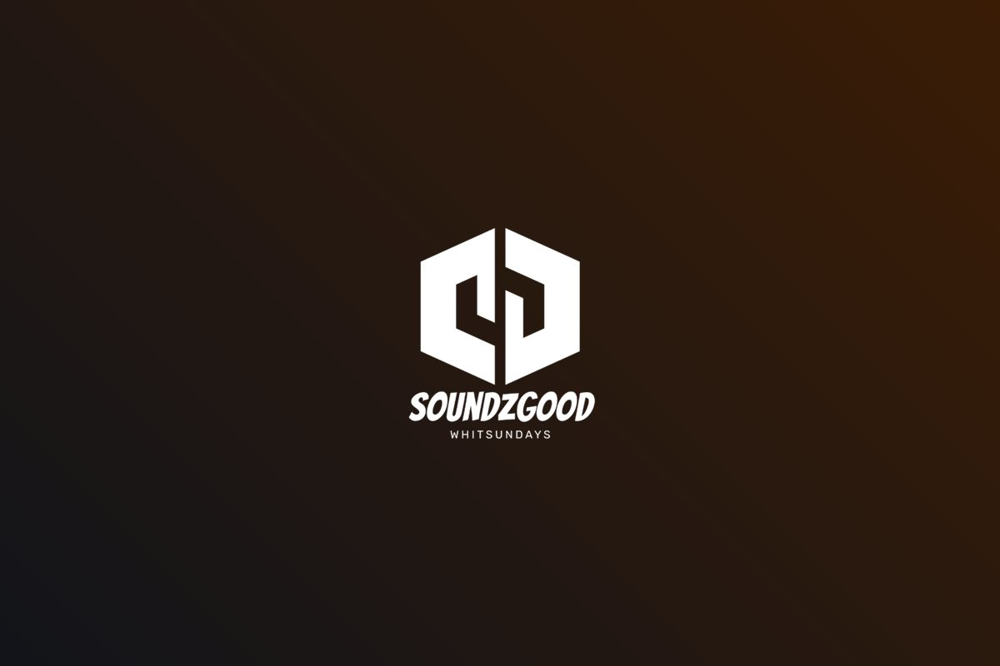

Event production · Bowen QLD
Don River Dash 2026: sound for 3,000 spectators along 300m of river
The Don River Dash 300 is one of Bowen’s biggest weekends. Bikes, buggies and off-road trucks race 300km through the bed of the Don River while thousands of people line the banks. For the 2026 Dash, SoundzGood Whitsundays looked after the spectator sound, the sponsors’ screen and the presentation PA.

- Event
- Don River Dash 300
- Dates
- 4–6 September 2026
- Location
- Don River & Bowen Showgrounds, Bowen QLD
- Audience
- 3,000 spectators
- Coverage
- 300m of riverbank
- We supplied
- Spectator sound, sponsor screen, presentation PA
About the event
The Don River Dash 300 is an off-road endurance race run over two days on the Don River in Bowen. Competitors in bikes, buggies and trucks complete six 50km laps of the river, chasing the King and Queen of the River titles. Entry is free for spectators, and the weekend opens with a Friday night community event at the Bowen Showgrounds with live music, live scrutineering of the race vehicles, a bar and food trucks.
The brief
The organisers needed three things working together across two very different sites:
- Spectator sound in the river, so the crowd could follow the race commentary wherever they stood.
- A large screen in the sponsors’ tent, giving sponsors and guests a clear view of the action.
- A PA for the presentations at the Bowen Showgrounds.
The challenge: 300 metres of riverbank, out in the river
A river race doesn’t come with a stage or a power board. The spectator area stretched about 300 metres along the river, with around 3,000 people spread along it, and power had to be run out to the river to drive it all. A couple of big speakers at one end would have been deafening up close and impossible to hear at the far end, so the system had to put clear, even commentary in front of every part of the crowd.
Our solution
We used a 100-volt line system, the same approach used for stadiums and racecourses. It sends sound efficiently over long cable runs, so dozens of speakers can be spread out evenly from one feed.
- 40 × 100-volt line horn speakers spread along the 300m spectator area
- 1 × 70-inch screen with a large speaker in the sponsors’ tent
- 4 × 12-inch PA speakers for the presentations at the Bowen Showgrounds
Spreading forty horns along the bank meant everyone heard the commentary at a comfortable level, whether they were at the start of the spectator area or the far end, without blasting the people closest to a speaker.
The result
“Best one yet.”The feedback on the 2026 Don River Dash
The commentary carried the length of the river, the sponsors had a front-row view from their tent, and the presentations at the showgrounds were heard loud and clear. We’re proud to be part of one of Bowen’s signature events, and we’ll be back for the Dash in 2027.
Planning an outdoor event in Bowen or the Whitsundays?
Big crowds over big distances, remote sites and tricky power are what we do. From race days and festivals to community events and presentations, SoundzGood Whitsundays supplies the sound, lighting, staging and screens and the crew to run them, across Bowen, the Whitsundays and North Queensland. You can also browse our hire gear.
Get a price for your eventIt takes a minute, and you’ll get an instant estimate.
Call Max on 0422 393 022